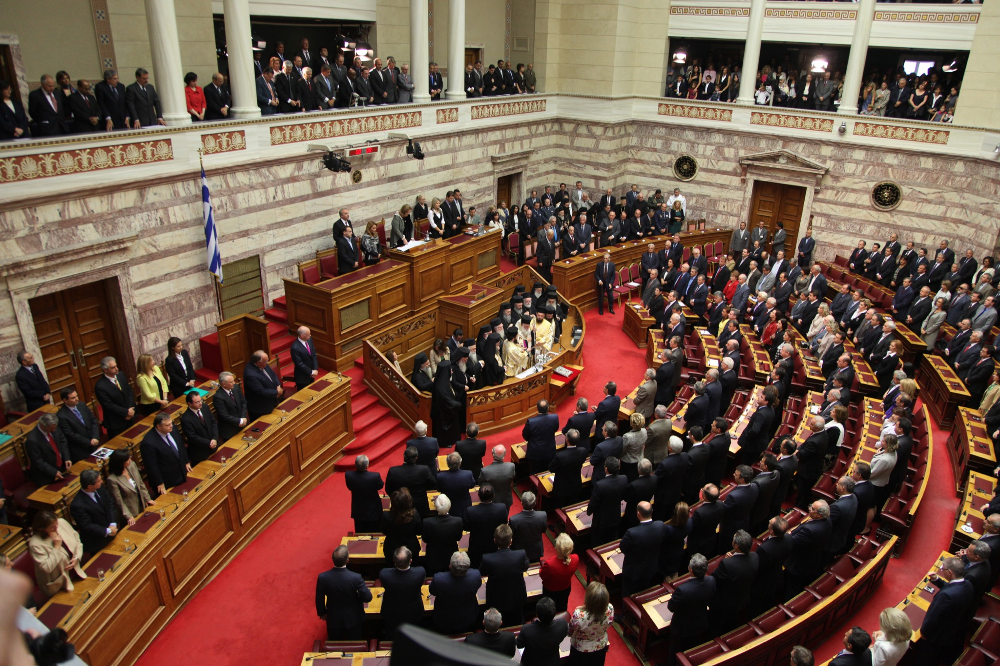
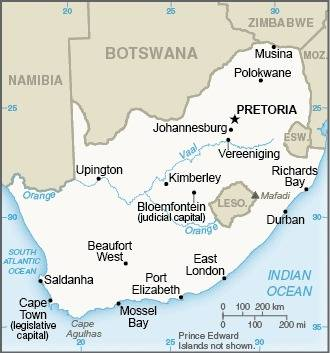
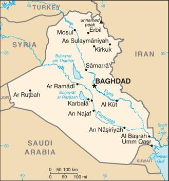
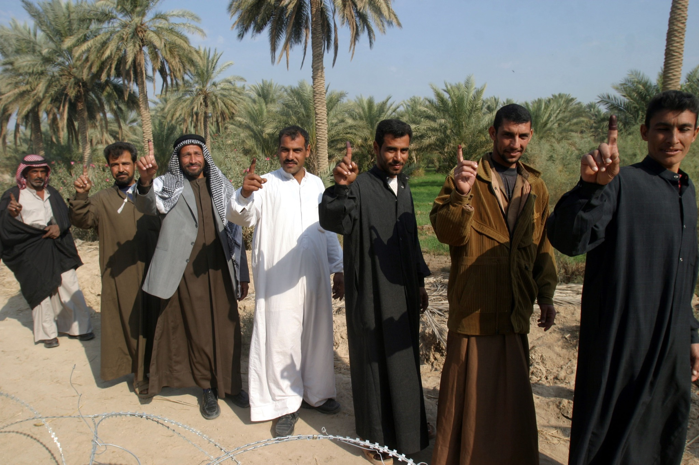

Chapter 4: Democracies and Democratization
4.1: What is Democracy?
By the end of this section, you will be able to:
- Recognize the origins and characteristics of democracies.
- Distinguish between direct and indirect democracy.
Introduction
“Many forms of Government have been tried, and will be tried in this world of sin and woe. No one pretends that democracy is perfect or all-wise. Indeed it has been said that democracy is the worst form of Government except for all those other forms that have been tried from time to time.”
— Winston Churchill, November 11, 1947
More than half of the governments currently in existence operate under some variation of democracy. The global trend toward democratization worldwide during the 20th century prompted some to conclude that democracy is simply the best, or most ideal, form of government. Indeed, near the end of the 20th century, political scientist Francis Fukuyama wrote a book, The End of History and the Last Man, in which he argued humanity had reached the end of history because many states had adopted forms of liberal democracy. His book was a best-seller that energized many about the prospects of a world that, by embracing democracy, would not again suffer the likes of major world wars. More than two decades after this publication, however, and in light of events like the September 11, 2001 attacks on the United States, the wars in Iraq and Afghanistan, the rise of China, the backsliding toward authoritarianism in Russia, the COVID-19 pandemic, and the eventual fall of Afghanistan back to authoritarian rule, Fukuyama mostly retracted his conclusion that the world had accepted democracy as the standard. Instead, he now asserts that issues related to political identity threaten the security of geopolitical stability. The many challenges facing democracy, democratization, and democratic backsliding prompt the following examination of democracy, its types, its institutions and models, and various manifestations throughout the world. Is democracy the best form of government? What are its advantages and disadvantages?

Origins, Definitions, and Characteristics of Democracy
There is evidence of what anthropologists designate ‘primitive democracy,’ wherein small communities have face-to-face discussions to make decisions, as far back as 2,500 years ago. However, the first formal application of democratic institutions and processes is generally attributed to Ancient Greece, with the city of Athens often credited as the birthplace of democracy. In its simplest terms, democracy is a political regime in which the supreme power of government is vested in the people. Democracy comes from the Greek word, dēmokratiā, where demos means “people” and kratos means “power” or “rule.” Prior to the formation of legal reforms, Athens operated as an aristocracy.
An aristocracy is a form of government where power is held by nobility or those considered to be of the highest class within a society. Aristocracy proved troublesome for Athens, and the people eventually rallied under an Athenian leader named Solon, who lived from approximately 640 to 560 B.C.E.. In trying to meet the demands of the people, Solon attempted to satisfy all classes of the Athenian population, rich and poor alike, to devise a form of government that satisfied all. To this end, in 594 B.C.E., Solon created legal reforms and a constitution, which provided the foundations for citizen participation in government affairs and abolished slavery of Athenian citizens. Under this construct, adult males who had completed their military training were given the right to vote, and as much as 20 percent of the population was active in making laws. Eventually, democracy in Athens failed due to both internal and external factors. Internally, there was heavy criticism that the aristocracy was still in force and able to pervert and manipulate legal outcomes to its benefit. Further, the works of Socrates, Plato, and Aristotle—all of whom criticized the merits and feasibility of democracy due to a desire for political stability and a worry of the consequences from ‘mob rule’—led to the erosion of trust in democracy in Athens. Externally, and tied to the prospect of political stability, Athens faced frequent challenges to its democracy from the outside. The Peloponnesian War, the changes in leadership from King Phillip II of Macedon and Alexander the Great, and the rise of the Roman Empire all contributed to the eventual decline of democracy in Greece. After the fall of democracy in Greece, the prospect of democracy did not reemerge as a feasible, or even desired, option until the Early Modern Era in the 1600s.
Ancient manifestations of democracy differ greatly from modern conceptualizations and applications. One of the key differences is in the way power from the people is channeled, which becomes apparent when comparing a direct democracy with an indirect democracy. A direct democracy enables citizens to vote directly, or participate directly, in the formation of laws, public policy, and government decisions. In this system, citizens personally become involved in all aspects of politics; they are able to change constitutions, recommend referendums and make suggestions for laws, and mandate the activities and actions of government officials. To some extent, Athens exercised a direct democracy in that adult male citizens, who had completed their military training, could participate directly in the making of laws. It was not a perfect democracy in that not all citizens—male and female, rich and poor—could participate, but it did have a mechanism for participation from a subset of citizens. In contrast, indirect democracy, also called ‘representative democracy,’ channels the power of the people through representation, where citizens elect representatives to craft laws and make government decisions for them. In this scenario, citizens are granted suffrage, which is the right to vote in political elections. In a healthy democracy, elections occur on a regular basis, and elections are free and fair. Free elections are those in which all citizens are able to vote for the candidates of their choice. The election is free if all citizens who meet the requirements to vote—such as a minimum age requirement—are allowed to participate. Fair elections are those in which all votes carry equal weight, the vote totals are counted accurately, and the election results are accepted by all parties. Ideally, a free and fair election meets the following standards:
Before the Election
Eligible citizens can to register to vote
Voters are given access to reliable information about the ballot and the elections
Citizens can run for office
During the Election
All voters have access to a polling station or some method of casting their vote
Voters can vote free from intimidation
The voting process is free of fraud and tampering
After the Election
Ballots are accurately counted
Election results are publicly announced
The results of the election are accepted, respected, and honored
The integrity of elections is of paramount importance in democracies. If the election process is not free and fair, it violates the core definition of a democracy: the supreme power of government must be vested in the people.
Indirect democracy is the system that most democratic states use today. This is partly due to logistical considerations. In the United States, for example, how would every adult citizen directly participate in the making of laws? Requiring a vote for every decision would not be time efficient or logistically feasible. The choice of indirect democracy is also partly due to worries over whether voting is always the best option to determine just, equitable, or ideal outcomes. In a representative democracy, citizens outsource the power of lawmaking to those who, ideally, have more expertise in crafting legislation and who have access to a greater depth of information on policy issues.
Although most democratic states practice indirect democracy, there are sometimes mechanisms that align with direct democracy. For instance, the United States has a representative democracy, but voters in some states can put forth initiatives and referendums, also referred to as ballot propositions, for citizens to vote on directly.
Conceptualizing and Operationalizing Democracy
Beyond the necessity of free and fair elections that occur on a regular basis, scholars point to additional requirements for what they term ‘liberal democracies.’ A liberal democracy not only facilitates free, fair, and regular elections, but also ensures the protection of civil liberties, such as freedom of speech, and civil rights, including freedom from discrimination. As political scientists Robert Dahl, Ian Shapiro, and Jose Antonio Cheibub (2003) assert, every vote in a representative democracy must carry equal weight, and the rights of citizens must be equally protected by a well-defined and clear ‘law of the land’ (typically, a constitution).
In a similar vein, Larry Diamond (2004), a political sociologist and scholar of democracy, details that a democracy must include the following four characteristics:
A system for choosing and replacing the government through free and fair elections
Active participation of the people, as citizens, in politics and civic life
The protection of human rights of all citizens
A rule of law in which the laws and procedures apply equally to all citizens
Yet others disagree with such rigid definitions. Karl Popper (2002), for instance, provides a blunter definition of democracy: “I personally call the type of government which can be removed without violence ‘democracy,’ and the other, ‘tyranny.’” Here, Popper emphasizes the importance of citizens having access, availability, and opportunity to control their leaders without violence, retribution, or revolution.
There are hundreds of critiques and frameworks for defining and categorizing democracies, and scholars are generally not in full agreement on what constitutes a perfect democracy. This disagreement also manifests when comparing organizations or indicators that measure levels of democracy across states. There are at least eight major attempts to quantify the existence and health of democracies worldwide: the Democracy Barometer, the Economist Intelligence Unit’s Democracy Index, Freedom House’s Freedom in the World Index, the Human Freedom Index, the Polity Project (Polity5), Varieties of Democracy (V-Dem), the Polyarchy Index, and the World Governance Indicators. Table 4.1.1 highlights some of the indicators that three of these organizations use when assessing democracy, illustrating how organizations operationalize (measure) the concept of democracy in slightly different ways.
Table 4.1.1: Operationalizing (Measuring) Democracy
| Index | Components Measured |
|---|---|
| Economist Intelligence Unit | Elections; Participation; Functioning of government; Civil liberties; Political culture |
| Freedom House | Elections; Participation; Functioning of government; Individual rights; Organizational rights; Free expression; Rule of law |
| Varieties of Democracy | Elections; Participation; Individual rights; Deliberation; Egalitarianism |
The different operationalizations yield different outcomes across these three organizations. For instance, as of 2018, Freedom House identifies 86 democracies and 109 non-democracies while Varieties of Democracy identifies 99 democracies and 80 non- democracies. As a reminder from Chapter 3, a non-democracy is a political regime that denies citizens meaningful institutional channels for making choices about their collective well-being.
Given that both scholars and these organizations acknowledge different conceptualizations and operationalizations of democracy, the next section will discuss how institutions vary within democracies.
4.2: Institutions within Democracy
By the end of this section, you will be able to:
- Distinguish the functions of legislative, executive, and judicial branches of government.
- Define electoral systems and political parties.
- Determine the implications of political party composition and organization.
Introduction
Aside from considering the varying conceptualizations and operational measurements of democracy, scholars also examine the institutions that are common across democratic states. Democracies, for example, typically have three branches of government: the legislative, the executive, and the judicial. These branches are akin to building blocks; each block has a distinct function, wields a distinct form of power, and operates within a system of separation of powers with checks and balances. Separation of powers is a system that divides government functions into three branches: the legislative branch, tasked with making laws; the executive branch, tasked with carrying out or enforcing laws; and the judicial branch, tasked with interpreting the constitutionality of laws. These three branches generally operate under a system of checks and balances, which provides the different branches with powers to limit one another in an effort to ensure that no branch becomes too powerful. For instance, the executive may have the power to veto, or reject, a law passed by the legislative branch.
Other hallmark institutions of democracies are their electoral systems and political parties. Electoral systems, simply put, are voting systems; an electoral system provides a set of rules that dictates how elections are conducted and how results are determined and communicated. Political parties are organized groups of people who unite under shared values to get their preferred candidates elected to political office.
This section provides a brief overview of these institutions. When taken together, variations within them reveal the many unique democracies that exist in the world today.
Executive, Legislative, and Judicial Branches
While some elements and characteristics of democracy vary, one commonality is the separation of powers among the branches of government.
The legislative branch generally performs three main functions: (1) it makes and revises laws; (2) it provides administrative oversight to ensure laws are properly executed; and (3), it represents members’ constituents in the government, ideally enacting laws related to citizens’ interests. There are three main types of legislatures. The first is a consultative legislature, which is a type of legislative body that advises the leader, or group of leaders, on issues relating to laws and their applications. In the consultative legislature, members may be elected or appointed. The second is the parliamentary legislature, which is a type of legislative body in which members are elected by the people, enact laws, and choose the head of government (typically, a prime minister). The parliamentary system will be examined in greater detail in the next section of this chapter. The third type of legislature is the congressional legislature, which is a type of legislative body in which members are elected by the people, enact laws and share powers with other branches within the government. In comparison to a parliamentary legislature, a congressional legislature does not have the ability to choose the head of government.


Interestingly, while most of the legislatures in North and South America are congressional legislatures (with the exception of Canada), European legislatures tend to be parliamentary. As an example of a congressional legislature, consider the United States. The U.S. Congress, a bicameral legislature composed of the House of Representatives and the Senate, enjoys substantial powers through its constitutional mandate; it can levy taxes, borrow money, spend money, regulate interstate commerce, establish a national currency, establish a post office, declare war, raise and support an army and navy, establish courts, and pass all laws “necessary and proper” to complete its work. Congress can also propose amendments to the U.S. constitution, call for a constitutional convention, and admit new states to the country. What it cannot do, however, is choose the U.S. President. Additionally, each of the other two branches of government has the ability to ‘check’ the legislature’s power.
The U.S. President is an example of an official who falls within the executive branch of government. The executive branch is responsible for implementing and enforcing the laws made by the legislature. It is typically led by a president or a prime minister,though many systems include a second-ranking position beneath the chief executive (such as a vice president); a small group of leaders who have institutional powers (for example, a cabinet); and numerous agencies, sometimes referred to as ‘departments’ or ‘ministries’ (such as a Department/Ministry of Defense, Department/Ministry of Education, and Department/Ministry of State). The chief executive may serve the role of the head of government and/or the head of state. The head of government runs and manages the day-to-day business of the state. The head of state is the symbolic representative of the state; for example, the head of state may represent the state internationally by attending ceremonial gatherings.
.jpg){kind=link}
The final branch is the judicial branch, which refers to the part of government that resolves disputes through courts and interprets, applies, and determines the constitutionality of laws. Many states provide the courts with the power of judicial review as a ‘check’ on the other branches of government. Judicial review is the ability of courts to interpret the constitutionality of laws and government actions. A state may allow for judicial review within its existing court system, or a state may create a special ‘Constitutional Court’ for this purpose.
Electoral Systems and Political Parties
As defined in the introduction, an electoral system provides a set of rules that dictates how elections are conducted and how results are determined and communicated. In a democracy, an election is the mechanism by which leaders are chosen for political office and, as discussed in 4.1, the election must be conducted in a free and fair manner. An electoral system may include rules about when elections occur, who can vote, who can run as a candidate, how and where voting takes place, how to collect and count ballots, and what constitutes an electoral victory. Voting rules may be enshrined in constitutions, election laws, and/or other legal mandates.
There are many different types of electoral systems, though only three will be introduced here. First, the plurality voting system is one in which the winning candidate simply earns the most votes. In this system, there is no requirement that a candidate attain a majority of votes, and this system is sometimes called the ‘first-past-the-post’ system. In legislative elections, plurality voting systems often accompany single-member districts, which elect only one representative for a distinct geographical area. Second, the majoritarian voting system is one in which a candidate must win a majority (at least one-half of the votes) in order to win the election. If no candidate wins a majority, there will be a subsequent ‘runoff election’ between the top two vote-earners from the first round. Third, the proportional voting system is one in which the distribution of seats (for instance, in a legislature) reflects the overall distribution of votes by the population. For instance, if 20 percent of the population votes for Political Party A, then the state’s legislature will provide Political Party A with approximately 20 percent of its seats. In legislative elections, proportional voting systems often accompany multi-member districts, which can elect more than one representative for a distinct geographical area.
These three systems are common, but they do not represent the entire spectrum of electoral systems. For instance, some states employ mixed voting systems, in which they utilize different systems in different types of elections, such as presidential and legislative contests; some states employ quotas, rules that aim to guarantee a certain amount of representation for historically underrepresented groups by allocating specific percentages of seats to women, religious minorities, or ethnic minorities; and some states employ election thresholds, rules that require a minimum percentage of votes before a political party can gain any seats in a legislature.
Political parties are therefore another crucial institution within democracies. Political parties are organized groups of people who unite under shared values to get their preferred candidates elected to political office. Political parties also play integral roles in accomplishing their political agendas once in office. In relation to electoral systems, a plurality voting system (first-past-the-post) generally results in two powerful political parties that vie to control power, such as the Democratic Party and the Republican Party in the United States. A proportional representation system, alternatively, generally yields a larger number of political parties. Israel, as one example, often has at least 10 political parties represented in its legislature, the Knesset.
For some countries, context matters. For example, a few democracies have been dominated by just one political party, such as the Liberal Democratic Party (LDP) in Japan and the African National Congress (ANC) in South Africa. Other countries have just two-party systems, exemplified by the United States in the previous paragraph, or have two dominant parties with regional parties, such as the United Kingdom and Canada. In these two examples, the Scottish National Party often wins the elections for seats in the regional assembly for Scotland, whereas the Bloc Québécois tends to win seats in the Canadian parliament and the regional assembly for Quebec. However, as mentioned earlier, most democracies have vibrant multi-party systems that are shaped by their electoral systems.
While the primary objective of political parties is to get their preferred candidates elected to public office, they also function as important linkage institutions between the people and the state. For example, political parties play an important role in helping citizens participate in politics, whether in the form of mobilizing voters during elections or recruiting candidates for political office. Political parties also represent various cleavages in society, or divisions based on a certain identity, such as race, ethnicity, religion, class, and geography. For instance, the emergence of the capital-labor cleavage in Europe during the 19th and 20th centuries led to the creation of new political parties that represented interests of the laborer over the factory owner. One example is the Labour Party of the United Kingdom, which was founded in 1900 to advocate for the needs of trade union members and others working in the industrial sector.
This discussion of branches of government, electoral systems, and political parties leads logically to the following section, which combines the information above to identify the three major systems of democratic government: presidential, parliamentary, and semi-presidential.
4.3: Systems of Democracy
By the end of this section, you will be able to:
- Identify the defining characteristics of presidential, parliamentary, and semi-presidential systems of democratic government.
- Evaluate the advantages and disadvantages of each of the systems of government.
Introduction
Depending on the relative distribution of power between the legislative and executive branches within a democracy, there are three potential systems of government: the presidential system, the parliamentary system, and the semi-presidential system. Each of these systems was designed to fit the context and culture of its democracy, and each has its share of advantages and disadvantages.
Systems of Government
The presidential system, sometimes called the ‘single executive system,’ is one in which an elected president leads the executive branch, acting both as the head of government and as the head of state. There is a clear separation of powers in this system, with the executive branch and the legislative branch distinct, and with the president elected independently from the legislature. Brazil, Colombia, Mexico, and the United States are all examples of states with presidential systems. In each state, the president serves a fixed term. In Colombia, as one example, the president can serve a single term of four years; in Mexico, as another example, the president can serve a single term of six years.

The parliamentary system is one in which the chief executive, usually a prime minister, is not directly elected and is instead chosen by the legislature, or parliament. This arrangement is referred to as a fusion of powers, as the members of the executive branch, beginning with the prime minister, are also members of parliament and hold their office in parliament simultaneously while serving in the executive branch. For instance, the prime minister serves as the head of government in the executive branch while still representing an electoral district in parliament.
While the prime minister typically serves as the head of government, they do not serve as the head of state. In the United Kingdom, for example, the British monarch serves as the head of state in a largely ceremonial role while the prime minister serves as the head of government who directs day-to-day political activities. Prime ministers must have the support of the legislature in order to take office and, should the legislature desire a change in executive leadership, it can remove the prime minister through a ‘vote of no confidence.’
.jpg){kind=link}
The semi-presidential system, sometimes called ‘the dual executive system,’ is one in which a state has both a president and a prime minister, and the dual executives share power. The president is typically directly elected and serves as the head of state. The Prime Minister is typically appointed by the president and serves as the head of government. In France, for instance, the president is directly elected and then appoints the prime minister, but the French legislature retains the ability to dismiss the prime minister through a vote of no confidence. In this way, the semi-presidential system combines elements from the presidential and parliamentary systems.
Advantages and Disadvantages
Each of the three systems of government has potential advantages and disadvantages.
The executive’s popular election and fixed term within the presidential system is sometimes considered ideal, as it can ensure democratic legitimacy, produce stability, and provide voters with a clear understanding of the leadership timeline. Yet, at the same time, the direct election of the president can sometimes lead to a problem with personalization of power, where too much power centers on one person, which can lead to cronyism or the erosion of democratic institutions. It can also lead to gridlock, the inability to pass legislation, when different political parties control the executive and legislative branches. Finally, the fixed term can be a disadvantage if there is an unpopular president and no easy way to remove the executive, such as through a vote of no confidence. In the United States, for example, removal of a president requires either (1) impeachment and a trial conviction through the legislature or (2) the following of a process described in the 25th Amendment to the U.S. Constitution. In either case, removing a president from office is exceedingly difficult.
The executive removal process in a presidential system is far more cumbersome than in a parliamentary system. One advantage of a parliamentary system, therefore, is that the legislature can remove a prime minister from power at any time, and for any reason, by simply getting a majority consensus among the legislators. This is a dynamic and flexible model that has the ability to respond quickly when a lack of consensus arises. Yet while perhaps an advantage when a prime minister is unpopular and/or not completing their political agenda, the possibility for frequent changes in leadership can cause instability and uncertainty. Additional concerns related to instability exist because, in order to form a majority, parliamentary systems sometimes require political parties to form coalitions. Coalitions are temporary groupings between two or more political parties. These coalitions often contain fragmented political parties with widely divergent interests, which requires ongoing negotiations to please all sides.
The semi-presidential system may at first appear as if, by combining aspects of the presidential and parliamentary systems, it can avoid the flaws inherent in each. For instance, while the president, as head of state, gains democratic legitimacy through elections, the prime minister, as head of government, also faces accountability through the threat of a legislative vote of no confidence. In addition, it may seem to be an advantage to have a division of labor between a president and a prime minister. Yet a disadvantage of semi- presidential systems is that these roles can sometimes blur, causing confusion surrounding the responsibilities of the dual executives. This can also lead to power struggles between the dual executives, especially because the president’s fixed term provides the head of state with an advantage over a prime minister who can be removed.
Table 4.3.1 summarizes a few of the advantages and disadvantages of the three systems of government identified above.
Table 4.3.1: Advantages and Disadvantages of Presidential, Parliamentary, and Semi-Presidential Systems
| System | Advantages | Disadvantages |
|---|---|---|
| Presidential System | Clear separation of powers; President gains legitimacy through elections; President has a fixed term | Potential for gridlock; Difficult to remove president from power; Potential for personalization of power |
| Parliamentary System | Head of government (prime minister) depends on legislative approval, providing accountability; Legislature can remove the head of government through a vote of no confidence; Collective leadership is present, reducing the risk of personalization of power | Lack of separation of powers between head of government and legislature; Head of government is not elected directly by the people; Potential for instability in the head of government and/or governing coalitions |
| Semi-Presidential System | President gains legitimacy through elections; Head of government (prime minister) depends on legislative approval, providing accountability; Division of work between the dual executives can decrease the amount of bureaucracy | Fixed terms tend to favor the president in the dual executive relationship; Responsibilities for the dual executives can blur, leading to confusion; Potential for power struggles between the dual executives |
4.4: Democratization and Democratic Consolidation
By the end of this section, you will be able to:
- Identify characteristics of democratic consolidation.
- Recognize theories of democratic consolidation.
Introduction
As a reminder from Chapter 3, a political regime transition occurs when a state experiences a change in its political regime, the set of rules that structures access to political power. Democratization is a political regime transition in which a state moves from a non-democratic regime to a democratic regime. After democratization occurs, states embark on democratic consolidation, a process in which new democracies evolve from fledgling democratic regimes to established, stable, and secure democratic regimes. Through this process, democracy becomes recognized as “the only game in town,” with the state exhibiting strong and high-quality democratic institutions. These strong institutions reduce the state’s risk of reverting to a non-democratic regime.
Theories of Democratization
One of the most important questions in comparative politics is why some countries develop democratic political systems while others remain authoritarian. Scholars have proposed several theories to explain democratization, each emphasizing different social, economic, political, and international factors. Among the most influential explanations are modernization theory, elite theory, civil society theory, international relations theory, and political culture theory. Although no single theory fully explains all cases, each provides valuable insights into the conditions that promote or hinder democratic development.
Modernization theory of democratization argues that democracy is more likely to emerge as societies undergo economic and social development. According to this perspective, modernization produces a growing middle class and a population that is wealthier, more educated, and increasingly urbanized. As societies modernize, traditional forms of authority and hierarchy tend to weaken, while values such as tolerance, individual autonomy, and gender equality become more widespread. These social changes are believed to create favorable conditions for democratic governance by encouraging citizens to demand greater political participation and accountability. There is some evidence supporting modernization theory. Most of the world’s stable democracies are relatively wealthy countries with high levels of education and economic development. However, the relationship between modernization and democracy is far from universal. Many countries have experienced significant economic modernization without becoming democratic, while others have established democratic institutions despite relatively low levels of economic development. For example, India developed and maintained democratic institutions long before achieving widespread economic modernization. In contrast, China has experienced rapid economic growth and modernization while remaining under authoritarian rule. Because of such exceptions, modernization theory lost much of its influence among scholars by the 1970s, although economic development remains an important factor in many contemporary explanations of democratization.
Elite theory of democratization emphasizes the distribution of wealth and political power within society. According to this perspective, democratization depends largely on the calculations and interests of powerful groups. When wealth and political authority are concentrated in the hands of the same elites, those elites may resist democratic reforms if they fear that democracy could threaten their economic privileges or political influence. However, elites do not always oppose democracy. In some cases, they may support democratic transitions when their interests can be protected through negotiated agreements. For example, democratic transitions in South Africa and Chile involved arrangements that allowed many economic elites to retain their wealth and influence. In other cases, elites may view support for democracy as a way to gain international legitimacy or strengthen relationships with important allies, as occurred during Taiwan’s democratic transition. Elite theory also emphasizes that elites are not limited to government officials. Wealthy business leaders, landowners, and other influential individuals who benefit from authoritarian systems often play crucial roles in sustaining or transforming political regimes. If these groups believe they will be equally or more successful under democracy, they may become supporters of political change.
Civil society theory of democratization focuses on the role of organized groups and associations that exist outside direct state control. Civil society includes community organizations, labor unions, religious groups, professional associations, advocacy organizations, and many other forms of collective activity through which citizens define and pursue their interests. A strong civil society can provide citizens with opportunities to cooperate, develop leadership skills, and mobilize for political reform. According to this theory, democratization is more likely when civil society is strong and capable of organizing collective action. Nondemocratic governments often recognize the potential threat posed by independent organizations and may attempt to restrict their activities. At the same time, advocates of democracy frequently view civil society as a powerful force for political change. Historical examples illustrate its importance. In 1989, mass protests organized by civil society groups contributed significantly to the collapse of communist regimes across Eastern Europe. Similarly, during the Arab Spring of 2010–2011, demonstrations and activism by civil society organizations helped trigger political upheaval and regime change in several countries across North Africa and the Middle East.
International relations theory of democratization argues that external actors can influence whether countries become democratic. States, international organizations, and nonstate actors may promote democracy directly through intervention and assistance or indirectly through economic incentives and political pressure. Historical examples demonstrate several pathways through which international actors can encourage democratization. Following World War II, the United States and its allies played central roles in establishing democratic institutions in Japan and Germany. More recently, the European Union has encouraged democratic reforms in Eastern Europe by linking membership opportunities, trade benefits, and foreign investment to political liberalization. International nongovernmental organizations (NGOs) have also supported democratization by training activists, monitoring elections, and strengthening local organizations, as occurred in Tunisia during the Arab Spring. At the same time, international influence has important limitations. Some countries remain largely insulated from external pressure. North Korea’s extreme political and economic isolation makes it difficult for outside actors to promote democratic change. Similarly, China’s vast economic resources and global influence enable it to resist many forms of international pressure that might affect smaller states. As a result, international actors can facilitate democratization in some contexts but have limited impact in others.
Finally, political culture theory of democratization examines the relationship between cultural values and democratic governance. One longstanding debate concerns whether democracy is primarily a product of Western culture or whether it can emerge in any society. Some scholars argue that democracy depends on values traditionally associated with Western societies, such as individualism, secularism, and tolerance of political disagreement. According to this view, democracy emerged first in Western Europe and North America because these regions developed the cultural foundations necessary for democratic institutions. Democracy is therefore seen not merely as a set of political rules but also as a product of specific historical, religious, and philosophical traditions. Other scholars reject the idea that democracy is uniquely Western. They argue that democratic institutions can develop in any cultural setting, although local traditions and values may shape how democracy functions in practice. Supporters of this perspective note that Catholic countries in Europe were once considered incompatible with democracy but later became successful democracies. They also point out that every major world region and cultural tradition now includes at least one democratic state. From this perspective, democracy is adaptable and can take different forms while still preserving core principles of political participation and accountability.
In comparing the theories, each of these theories highlights a different aspect of democratization. Modernization theory emphasizes economic and social development; elite theory focuses on the interests of powerful groups; civil society theory examines citizen organization and collective action; international relations theory stresses external influences; and political culture theory explores the role of values and beliefs. Contemporary scholars generally recognize that democratization is a complex process shaped by multiple interacting factors rather than a single cause. Understanding these competing explanations helps explain why democracy has developed along different paths in different parts of the world.
Theories of Democratic Consolidation
Scholars expect consolidated democracies to endure, but how can they tell when a democracy moves from fledgling to established status? What are the indicators of a consolidated democracy?
Two potential indicators of democratic consolidation are the ‘two-election test’ and the ‘longevity test.’ The two-election test, also known as the ‘transfer of power test,’ asserts that a democracy becomes consolidated when a government that was elected through free and fair elections is subsequently defeated in a following election, and all sides accept the election outcome. This test judges democratic consolidation by the peaceful transfer of power. One problem with using this test as an indicator of democratic consolidation is that some states have dominant party systems in which the same political party is elected to office repeatedly. Japan’s Liberal Democratic Party (LDP), for example, has been in power almost continuously since its founding in 1955, and it was in power continuously for nearly four decades, from 1955-1993. Yet even in 1992, Freedom House ranked Japan as a ‘free’ regime. It is difficult to imagine arguing that Japan was not a consolidated democracy prior to the 1993 election.
The second potential indicator of democratic consolidation is the longevity test, which asserts that a democracy becomes consolidated after it holds free, fair, and regular elections for an extended period of time (for example, for more than two decades). Yet this test also has problems. If elections are held over time, yet those elections benefit only one party, the longevity test may not be a good indicator of democratic consolidation. Persistent elections do not necessarily indicate a high quality of democracy.
The problems with these two tests demonstrate that it can be difficult to identify indicators for consolidated democracy. The following section briefly reviews three theories related to the likelihood of democratic consolidation, though scholars have proposed other theories as well.
Theory 1: The regime type that existed prior to the democracy will affect whether a state reaches consolidated democracy status.
This theory posits that some types of non-democratic regimes are, following a regime transition, more likely to lead to consolidated democracies than others. If a non-democratic regime, for example, held partially free or fair elections, or if that regime allowed for any institutions that were representative of the people, these pre-existing conditions may increase the likelihood of democratic consolidation following democratization. Alternatively, if the prior non-democratic regime centered leadership in a military junta, this may decrease the likelihood of democratic consolidation following democratization due to an increased likelihood of military interference in the new regime.
Theory 2: The type of political regime transition will affect whether a state reaches consolidated democracy status.
This theory questions whether the circumstances under which democratization occurs within a state matter. According to Huntington (1991), who or what group initiates the transition toward democracy helps to determine the likelihood of democratic consolidation. If external forces impose a transition to democracy, such as by overthrowing an existing dictator, the outsider-led rupture may make democratic consolidation less likely; if groups within the society initiate a transition to democracy, such as by protesting against the existing regime, this insider-led rupture may make democratic consolidation more likely.
Theory 3: The likelihood of democratic consolidation increases with economic development.
This theory argues that a state with a free market system is more likely to experience democratic consolidation, and economic growth acts as a catalyst for democratic consolidation. As Beethem (1994, pp. 164-165) describes:
“… a market economy disperses decisional and other forms of power from the state. This serves the cause of democracy in a number of ways: it facilitates the development of an autonomous sphere of ‘civil society’ which is not beholden to the state for resources, information or organisational capacities; it restricts the power and scope of a bureaucratic apparatus; and it reduces what is at stake in the electoral process by separating the competition for economic and political power into different spheres.”
If a state shows a willingness to promote a free market with fair competition, it also shows that it is willing to loosen its grasp on an institution that it could otherwise control. By choosing not to control all market outcomes, the state is more likely to experience economic growth. And, the more that the economy improves, the more citizens within a state can experience prosperity and engage in political life, promoting democratic consolidation.
While these three theories give broad insight into factors that may promote or hinder democratic consolidation, the following section compares the process of democratization and evaluates democratic consolidation across two specific cases: Iraq and South Africa. These two cases will elucidate a number of other factors that must be considered when studying the likelihood of democratic consolidation, such as historical context, political culture, identity politics, class structures, economic structures, and political institutions.
4.5: Comparative Case Study — South Africa and Iraq
By the end of this section, you will be able to:
- Compare and contrast democratization efforts in South Africa and Iraq.
Introduction
Political scientist Samuel P. Huntington popularized the concept of ‘waves of democratization.’ Waves of democratization are periods in history when multiple states move from non-democratic to democratic political regimes during the same time period. At the time of his writing, in 1991, Huntington argued that democratization worldwide occurred through three waves, with each wave followed by a reverse wave of democratic backsliding. The first wave occurred between 1828 and 1926, following the American and French revolutions, was marked by the adoption of liberal constitutions and the expansion of suffrage in Western Europe and North America. The second wave occurred between 1943 and 1962, which followed the Allied victory in World War II, was marked by the democratization of autocratic states like Germany, Italy, and Japan and the decolonization of territories in Africa and Asia, such as India, which were previously part of European empires.
The most recent wave of democratization, the third wave, began with the Carnation Revolution in Portugal in 1974. Over the subsequent decades, the number of democratic regimes worldwide increased dramatically, with new democracies emerging (in roughly chronological order) across Southern Europe, Latin America, Asia, Eastern Europe and the former Soviet Union, and Africa.
These democratic regimes emerged due to a combination of internal and external factors. Internally, non-democratic states experienced a decrease in legitimacy due to societal rejection of authoritarianism; economic growth, allowing them to modernize and improve institutions that support education and the working class; and changes in how religion and religious traditions affected political institutions. Externally, non-democratic states faced regional and global pressures. The ‘demonstration effect,’ for instance, allowed citizens in one state to observe other states successfully embarking on democratization efforts, and then use that inspiration to call for the same type of political regime transition. Globalization, moreover, provided citizens with the ability to access information quickly, exposing them to new ideas.
More than 50 years after the start of the third wave, scholars continue to study democratization by examining, among other things, how democratization efforts begin, how interim governments organize during political regime transitions to push toward elections, and whether the democratization efforts result in consolidated democratic regimes. Democratizing states experienced vastly different outcomes, and many states that attempted to democratize during and after the third wave did not become consolidated democracies. Rather, they simply transitioned into semi-authoritarian regimes or illiberal, or flawed, democracies.
In this context of global patterns of democratization, the cases of South Africa and Iraq will be examined through the lens of the Most Similar Systems Design (MSSD). Iraq and South Africa share striking historical parallels, most notably their in their attempts to transition from oppressive authoritarian rule—Saddam Hussein’s Ba’athist dictatorship and the apartheid regime, respectively—to constitutional democracies. Both nations are resource-rich, possess diverse populations, and struggle with corruption and political inequality. In addition, both nations underwent profound political overhauls in the early 1990s and 2000s, writing new, towering constitutions and holding historic, free elections. Similarly, in both countries, governments inherited populations deeply scarred by systemic abuse, and both face ongoing battles against nepotism and corruption. Finally, each country experienced devastating periods of international isolation and sanctions that hampered their development—South Africa during apartheid and Iraq under UN sanctions in the 1990s and the U.S. invasion and occupation in the 2000s. Yet despite these similarities, the two countries have ended up with starkly different political outcomes. South Africa has progressed, though the country is considered a flawed democracy. Whereas Iraq has regressed, and is often classified as an authoritarian regime.
South Africa

- Full Country Name: Republic of South Africa
- Head(s) of State: President
- Government: Parliamentary Republic (Unitary dominant-party / executive presidency)
- Official Languages: 11 Official languages (English, Zulu, Swazi, Afrikaans, Sepedi, Sesotho, Setswana, Xitsonga, Xhosa, Tshivenda, isiNdebele)
- Economic System: Mixed economy
- Location: Southern Africa, at the southern tip of the continent of Africa
- Capital: Pretoria
- Total land size: 1,219,090 sq km
- Population: 56.9 million
- GDP: $680.04 billion note
- GDP per capita: $11,500
- Currency: Rand
Like Botswana and Somalia in Chapter 3, South Africa’s history is marked by frequent interventions and occupations by foreign powers through colonialism and imperialism. British and Dutch powers, attempting to expand their empires and grow their influence, colonized parts of South Africa at various points between the 1600s and 1800s. By the early 1900s, there was growing internal demand for South Africa to be independent from Britain. Multiple wars leading up to the 1900s, including the Boer Wars, contributed to deep racial divides between black and white citizens. White South Africans demanded independence from Britain, which eventually culminated in the formation of the Union of South Africa in 1910. The Union of South Africa modeled its government structure after the British system, but had a British leader installed as a ceremonial head of state. Full independence was achieved in 1931, giving South Africa’s government the ability to act outside of, and without permission from, the United Kingdom.
Although South Africa’s government had hallmarks of democratic government, such as three branches of government operating with checks and balances, its legacy of colonialism and racial divide made democratization difficult. Under British rule, a number of laws promoted segregation and the disenfranchisement of nonwhite citizens. Following World War II, a political party called the National Party stoked fears within the country that significant growth in the nonwhite population of South Africa was a threat. The National Party won the majority vote in the 1948 election and implemented a system of apartheid. Apartheid is a system of governance in which racial oppression is institutionalized. In the case of South Africa, this meant laws were implemented to ensure that South Africa’s minority white population could dominate all political, social, and economic factors within the state. Apartheid in South Africa resulted in, among other things, the segregation and displacement of nonwhites into segregated neighborhoods and the prohibition of interracial marriage and relationships.
Despite fierce criticism from the United Nations and the global community, South Africa’s system of apartheid endured until 1991. In the 1970s and 1980s, South Africa experienced intense internal strife with clashes between those who supported the National Party and those who opposed apartheid. The main opposition to the National Party, the African National Congress (ANC), worked to bring down South Africa’s system of apartheid. The ANC, having been forced into exile for many years, used a variety of tactics to force pressure upon the National Party, including using guerrilla warfare and acts of sabotage. Eventually, the National Party and the ANC began meeting to negotiate a way forward. The outcomes of these negotiations was the abolishment of apartheid and, in the coming years, the election of the first democratically elected President of South Africa, Nelson Mandela.


Nelson Mandela, was a member of the ANC who had been imprisoned for 27 years prior to his release in 1990. Under his leadership as President of South Africa, he oversaw the drafting of a new constitution which, in tandem with solidifying various democratic principles, heavily emphasized racial equality and the protection of human rights. Mandela saw it as his personal mission to heal the racial divides within the country, and he formed a Truth and Reconciliation Commission (TRC). The TRC investigated crimes committed both by the government (led by the National Party) and the ANC under the apartheid system. Though difficult to quantify, the TRC was widely held as a key factor in helping move South Africa forward.
Mandela stepped down as the President of the ANC in 1998, and he retired from politics in 1999. Although Mandela made strides in improving domestic conditions—including investing in education, welfare programs, and the protection of workers and prominent industries—a number of challenges remain. South Africa continues to struggle with racial tensions, as well as persistent xenophobia due to large influxes of legal and illegal migrants. One of the major criticisms of Mandela’s term in office is his failure to fully address the HIV/AIDS pandemic. For many years, the HIV/AIDS pandemic was so severe in South Africa that the average life expectancy was only 52 years. Failure to provide a strategic approach to combat the pandemic led to decades of poor health outcomes within South Africa.
For many years, South Africa’s transition to democracy was heralded as a victorious example of democratization. Nevertheless, current challenges to South Africa’s democracy include corruption, enduring racism, and increased rates of femicide and gender-based violence. Each of these realities has contributed to the Economist Intelligence Unit labeling South Africa as a ‘flawed democracy.’ A flawed democracy is one in which elections are free and fair, and basic civil liberties are protected, but issues exist that hamper the democratic process. These issues include corruption, racism, and gender-based violence.
Corruption is, at best, damaging to democracy and, at worst, fatal to democracy. Corruption can erode the public’s trust in the government and its institutions, exacerbate inequality and poverty, and hinder economic development. In 2021, high-ranking political officials in South Africa faced allegations of corruption for misusing billions of dollars of foreign aid targeted toward COVID-19 relief. The government officials charged with corruption are undergoing investigations for their misuse of funds, particularly in allowing various private companies to exorbitantly price gouge the government. There are additional allegations of government corruption, particularly in the favoring of some private companies over others. Corruption within a country can also yield skepticism and condemnation from the global community, as trading partners may lose trust in conducting business with corrupt regimes.
Racism, too, can present threats to democracy. Failure to protect civil liberties and civil rights within a country can create illiberal or flawed democracies. Ongoing structural racism can exacerbate societal tensions and perpetuate violence. Unfortunately, racism is still an ever present force in South Africa. The last two decades have seen ongoing allegations of police and military forces engaging in racist activities. During COVID-19, a number of Black South Africans were killed by police officers violently enforcing lockdowns. Frequent instances of violence against Black citizens has prompted recurrent conversations over the implementation of hate crime legislation as well as appropriate rules for conduct regarding the use of force on citizens.
Finally, data shows continued increases in femicide and gender-based violence. Here again, democracies that are unable to protect civil liberties and civil rights of their citizens risk backsliding or inability to ever fully consolidate. To this end, equal protection of women under South African law is questionable. As of 2019, it was reported that 51 percent of women in South Africa experienced some kind of physical violence as a result of their gender. Violence towards women, which was already elevated prior to the pandemic, continued to increase during the COVID-19 lockdowns.
Iraq

- Full Country Name: Republic of Iraq
- Head(s) of State: Prime Minister
- Government: Federal Parliamentary Republic
- Official Languages: Arabic & Kurdish
- Economic System: Mixed economy
- Location: Middle East, bordering the Persian Gulf, between Iran and Kuwait
- Capital: Baghdad
- Total land size: 169,235 sq mi
- Population: 40 million
- GDP: $250.070 billion
- GDP per capita: $4,474
- Currency: Iraqi Dinar
Iraq formed in the wake of the defeat of the Ottoman Empire. The Arab people of the regions of Mosul, Baghdad, and Basra fought with the British to gain their independence. However, this did not quite happen. While Iraq was nominally independent, the country had signed an agreement with the British that gave them power over major segments of the country. British imperial authorities controlled the newly formed kingdom’s military and foreign affairs and had major influence over its domestic political and economic affairs. In 1921, Britain established King Faysal Il as ruler of Mesopotamia and officially changed the name to Iraq, which means “well-rooted country” in Arabic. Many Arabs in the region saw Iraq as an artificially created country, established by British authorities to maintain power in the region. As a result, many people saw the country, and its newly installed royalty, as illegitimate.
The British remained in Iraq for the next three decades, with military bases, transit rights for troops, and eventually British control over the growing oil industry. Still, the question of illegitimacy never left. King Faysal and his family were able to stay in power until 1958, when the grandson, Faysal II was overthrown in a coup d’état. The coup was led by a general that belonged to the Ba’athist Party. The Ba’athist Party was a transnational Arab political party that espoused pan-Arab nationalism and socialist economic policies. The party came to power in Iraq and Syria, but also exerted some power in Jordan, Lebanon, and Libya. After some turmoil between the Ba’athist party and the Iraqi military, the country eventually came under the command of Saddam Hussein. Hussein, who ruled until he was overthrown and executed during the U.S. invasion of Iraq in 2003, was from a mostly Sunni tribe in Tikrit, a city north of Baghdad. His reliance on members of his tribe and the city, which were a minority group in the country, contributed to the eventual violence that would follow the 1991 Gulf War.
After fighting Iran for eight years to a stalemate in the Iran-Iraq War, the country found itself in debt to its neighbors, particularly Kuwait, located to the South. Kuwait itself had been a thriving autonomous trading community for centuries. Similar to Iraq, the British curried favor with the ruling as-Sabah family and eventually took control of their military and foreign affairs. Iraq historically claimed Kuwait as its 19th province, believing that the British had unfairly kept it from them. The debt burden and the geopolitical advantage of Kuwait’s geography led Hussein to invade and annex the country in 1990. The United States and a coalition of allies invaded Kuwait and Southern Iraq the next year. Coalition forces routed Iraq forces and heavily bombed Iraq. In 1992, the US set up two ‘no-fly zones’ in the country to protect the Kurds in the north and the Shi’a in the south, who had rebelled against Hussein’s rule. A no-fly zone is when a foreign power intervenes to prevent a state from gaining air superiority. The intervening power must be willing to use their military to prevent certain aircraft from flying over an established area.
The no-fly zones and an ensuing United Nations embargo on Iraq greatly weakened the Hussein government. However, the incoming U.S. Bush Administration strongly believed that Iraq was in the process of developing or acquiring weapons of mass destruction (WMD). After the September 11, 2001 terrorist attacks, the Bush Administration pushed to invade Iraq a second time. The U.S. invaded in 2003, without much world support. Coalition forces captured Hussein later that year. He was put on trial, found guilty of crimes against humanity, and executed in 2006. During this time, a fact-finding mission found that there was no identifiable WMD program. They were, in the words of the official Presidential Commission on the Intelligence Capabilities of the United States Regarding Weapons of Mass Destruction, “dead wrong.”


The U.S. invasion and Hussein’s fall had a dramatic effect on Iraq. Chaos ensued. The U.S. was not ready to govern the country. Millions were displaced within Iraq and millions more fled the country as violence spiked. Long-simmering sectarian and ethnic disputes erupted in a full-fledged civil war and insurgency. Shi’a militias were unhappy about American military rule. Sunni tribes were fearful of reprisals. The Kurdish minority in the northern part of the country sought independence. Remnants of the Ba’athist party loyal to Hussein mostly folded into al-Qaeda in Iraq, which bitterly fought U.S. forces in several major battles. American soldiers were caught in the middle of a conflict where peace was elusive. Eventually, a surge of U.S. troops in 2007 provided enough security to allow the country to stabilize. U.S. forces finally withdrew from Iraq in 2011.
In 2014, the Islamic State of Iraq and Syria (ISIS), a successor terrorist group to al-Qaeda, rapidly grew into a massive presence in the region. Starting in Syria, ISIS took advantage of the security vacuum and moved into Iraq. ISIS surprisingly captured Mosul, the second largest city in Iraq. The terrorist organization used the revenues from the nearby oil fields to finance their violent activities. ISIS quickly expanded across the region and committed a series of terrorist attacks in Europe. However, by the end of 2017, ISIS had lost 95 percent of its territory. A combination of Russian-led Syrian forces and U.S.-led Kurdish forces, who sometimes worked together, defeated ISIS on the battlefield.
The majority Shi’a had always chafed under Hussein’s rule. His departure meant that the Shi’a would gain political power for the first time in centuries. A transitional Iraqi Governing Council led to democratic elections in 2005, where a religious Shi’a party won the plurality of seats under Nouri al-Maliki. al-Maliki remained as prime minister until 2014, where he governed a tenuous coalition and had been accused of protecting Shi’a militias. al-Maliki also forged closer ties with neighboring Iran, much to the chagrin of the American authorities. In addition, Iraq’s Kurdistan region declared independence in 2017. The referendum results were rejected by the Iraqi Parliament, and Turkey vehemently opposed the move. Kurdistan is still part of Iraq, though the region effectively functions as an independent country.


Today, Iraq is a tenuous confederation of three major groups: Sunni Arabs in the west, Kurds in the north, and Shi’a Arabs in the central and southern parts of the country. Iraq has a prime minister and a president, the latter of whom is elected by the Iraqi Parliament and has a largely ceremonial role. The state is mostly run through a sectarian apportionment system, muhasasa taiifia in Arabic, where the state is structured amongst the three major sectarian identities. Despite holding regular, competitive elections, the sectarian nature of the system—combined with weak political institutions, ongoing militia activity, and issues with corruption—leaves Iraq as a case in which efforts at democratization have not resulted in a consolidated democracy. Given this, the Economist Intelligence Unit labels Iraq as an authoritarian regime, which is defined as a form of government in which a small group of political, economic, military, or social elites holds political power and governs the state without meaningful constitutional accountability to the general population.
Conclusion
In sum, the comparative case study of South Africa and Iraq can help explain why countries with similarities in their history may end up with different political outcomes. South Africa is considered a flawed democracy, whereas Iraq is considered an authoritarian regime. A flawed democracy is a democratic regime in which elections are free and fair, and basic civil liberties are protected, but issues exist which may hamper the democratic process. For example, South Africa struggles to develop a viable democratic political culture, which includes popular support for democracy. The challenges that black South Africans have faced in the decades after apartheid, have led some to embrace non-democratic alternatives, such as support for a strong leader. These strong leaders are more populist in their approaches, often seeking to make their voters happy, rather than making difficult political and economic decisions. As mentioned before, Iraq is an authoritarian regime, and has suffered from more severe problems. Similar to South Africa, Iraq has failed to develop a strong democratic political culture. However, in Iraq this is due more to the lack of a functioning central government in Baghdad, as the three major groups struggle with each other for power. This sectarian system has also led to the loss of civil liberties, especially for minority groups that live within each major group’s geographical areas. This is less the case in South Africa, where the central government is much more effective, although still beset by corruption.
4.6: References
Acemoglu, Daron, and James A. Robinson. Economic Origins of Dictatorship and Democracy. New York: Cambridge University Press, 2006. Acemoglu, Daron, and James A. Robinson. Economic Origins of Dictatorship and Democracy. New York: Cambridge University Press, 2006.
Almond, Gabriel A., and Sidney Verba. The Civic Culture: Political Attitudes and Democracy in Five Nations. Newbury Park, CA: Sage, 1989.
Alvarez, Michael, José Antonio Cheibub, Fernando Limongi, and Adam Przeworski. “Classifying Political Regimes.” Studies in Comparative International Development 31, no. 2 (1996): 3–36.
Barro, Robert J. “Determinants of Democracy.” Journal of Political Economy 107, no. 6 (1999): 158–83.
Beetham, David. “Conditions for Democratic Consolidation.” Review of African Political Economy 21, no. 60 (1994): 157–72.
Boix, Carles. “Development and Democratization.” IBEI Working Paper no. 2009/26. Barcelona: Institut Barcelona d’Estudis Internacionals, 2009.
Bollen, Kenneth A. “Political Democracy and the Timing of Development.” American Sociological Review 44, no. 4 (1979): 572–87.
———. “Issues in the Comparative Measurement of Political Democracy.” American Sociological Review 45, no. 3 (1980): 370–90.
Bush, George W. “Bush Refuses to Deal with Radical Hamas Group.” MSNBC, January 25, 2006. http://www.msnbc.msn.com/id/11027180/.
Chandrasekaran, Rajiv. “Ties to GOP Trumped Know-How Among Staff Sent to Rebuild Iraq.” Washington Post, September 17, 2006.
Cheibub, José Antonio. Presidentialism, Parliamentarism, and Democracy. New York: Cambridge University Press, 2007.
Cheibub, José Antonio, Jennifer Gandhi, and James Raymond Vreeland. “Democracy and Dictatorship Revisited.” Public Choice 143, no. 1–2 (2010): 67–101.
Collier, David, and Robert Adcock. “Democracy and Dichotomies: A Pragmatic Approach to Choices about Concepts.” Annual Review of Political Science 2 (1999): 537–65.
Collier, David, and Steven Levitsky. “Democracy with Adjectives: Conceptual Innovation in Comparative Research.” World Politics 49, no. 3 (1997): 430–51.
Dahl, Robert A. Polyarchy: Participation and Opposition. New Haven, CT: Yale University Press, 1971.
———. On Democracy. New Haven, CT: Yale University Press, 1998.
Dahl, Robert A., Ian Shapiro, and José Antonio Cheibub, eds. The Democracy Sourcebook. Cambridge, MA: MIT Press, 2003.
Diamond, Larry. Developing Democracy: Toward Consolidation. Baltimore: Johns Hopkins University Press, 1999.
———. “What Is Democracy?” Lecture at Hilla University for Humanistic Studies, January 21, 2004. https://diamond-democracy.stanford.edu/events/lecture/what-democracy.
Diamond, Larry, and Marc F. Plattner, eds. The Global Resurgence of Democracy. Baltimore: Johns Hopkins University Press, 1996.
Dobbins, James. “Interviews: James Dobbins.” The Lost Year in Iraq, FRONTLINE, PBS, June 27, 2006.
Francisco, Ronald A. The Politics of Regime Transitions. Boulder, CO: Westview Press, 2000.
Freedom House. Freedom in the World 2010: The Annual Survey of Political Rights and Civil Liberties. Lanham, MD: Rowman & Littlefield / Freedom House, 2010.
———. “Checklist Questions and Guidelines.” Freedom in the World 2010. Washington, DC: Freedom House, 2010.
Frontiers in Political Science. “Peace and Democracy.” Accessed November 13, 2026. https://www.frontiersin.org/journals/political-science/sections/peace-and-democracy.
Gordon, Philip H., and Jeremy Shapiro. “Toward Crisis.” Chap. 4 in Allies at War: America, Europe, and the Crisis over Iraq, 93–123. New York: McGraw-Hill, 2004.
Hadenius, Axel. Democracy and Development. Cambridge: Cambridge University Press, 1992.
Huntington, Samuel P. The Third Wave: Democratization in the Late Twentieth Century. Norman: University of Oklahoma Press, 1991.
International Forum for Democratic Studies. National Endowment for Democracy. https://www.ned.org/ideas/.
International Institute for Democracy and Electoral Assistance (IDEA). https://www.idea.int.
Journal of Democracy. International Forum for Democratic Studies, Johns Hopkins University Press. https://www.journalofdemocracy.org/about/.
Karl, Terry Lynn. “Dilemmas of Democratization in Latin America.” Comparative Politics 23, no. 1 (1990): 1–21.
Laakso, Markku, and Rein Taagepera. “‘Effective’ Number of Parties: A Measure with Application to West Europe.” Comparative Political Studies 12, no. 1 (1979): 3–27.
Lawson, Stephanie. “Conceptual Issues in the Comparative Study of Regime Change and Democratization.” Comparative Politics 25, no. 2 (1993): 183–205.
Lijphart, Arend. Patterns of Democracy: Government Forms and Performance in Thirty-Six Countries. New Haven, CT: Yale University Press, 1999.
Lipset, Seymour Martin. “Some Social Requisites of Democracy: Economic Development and Political Legitimacy.” American Political Science Review 53, no. 1 (1959): 69–105.
———. Political Man: The Social Bases of Politics. Garden City, NY: Doubleday, 1960.
———. The First New Nation: The United States in Historical and Comparative Perspective. New York: Basic Books, 1963.
———, ed. Politics and the Social Sciences. New York: Oxford University Press, 1969.
Mainwaring, Scott. “Presidentialism, Multipartism, and Democracy: The Difficult Equation.” Comparative Political Studies 26, no. 2 (1993): 198–228.
Moore, Barrington, Jr. Social Origins of Dictatorship and Democracy: Lord and Peasant in the Making of the Modern World. Boston: Beacon Press, 1966.
Munck, Gerardo L., and Jay Verkuilen. “Conceptualizing and Measuring Democracy: Evaluating Alternative Indices.” Comparative Political Studies 35, no. 1 (2002): 5–34.
Neubauer, Deane E. “Some Conditions of Democracy.” American Political Science Review 61, no. 4 (1967): 1002–9.
O’Donnell, Guillermo. “Democracy, Law, and Comparative Politics.” Studies in Comparative International Development 36, no. 1 (2001): 7–36.
O’Donnell, Guillermo, and Philippe C. Schmitter. Transitions from Authoritarian Rule: Tentative Conclusions about Uncertain Democracies. Baltimore: Johns Hopkins University Press, 1986.
Polity IV. Polity IV Project: Dataset Users’ Manual. Center for Systemic Peace, 2009. https://www.systemicpeace.org/inscr/p4manualv2009.pdf.
———. Polity IV Project: Political Regime Characteristics and Transitions, 1800–2010. Center for Systemic Peace, 2011. https://www.systemicpeace.org/polity/polity4.htm.
Popper, Karl Raimund. Conjectures and Refutations: The Growth of Scientific Knowledge. London: Routledge, 2002.
Powell, G. Bingham, Jr. Contemporary Democracies: Participation, Stability, and Violence. Cambridge, MA: Harvard University Press, 1982.
Przeworski, Adam, Michael Alvarez, José Antonio Cheibub, and Fernando Limongi. “What Makes Democracies Endure?” Journal of Democracy 7, no. 1 (1996): 39–55.
———. Democracy and Development: Political Institutions and Well-Being in the World, 1950–1990. Cambridge: Cambridge University Press, 2000.
Putnam, Robert D. Making Democracy Work: Civic Traditions in Modern Italy. Princeton, NJ: Princeton University Press, 1993.
Remmer, Karen L. “New Theoretical Perspectives on Democratization.” Comparative Politics 28, no. 1 (1995): 103–22.
———. “The Sustainability of Political Democracy: Lessons from South America.” Comparative Political Studies 29, no. 6 (1996): 611–34.
Rustow, Dankwart A. “Transitions to Democracy: Toward a Dynamic Model.” Comparative Politics 2, no. 3 (1970): 337–63.
Sartori, Giovanni. The Theory of Democracy Revisited. Part 1: The Contemporary Debate. Chatham, NJ: Chatham House, 1987.
Saward, Michael. “Democratic Theory and Indices of Democratization.” In Defining and Measuring Democracy, edited by David Beetham, 6–24. London: Sage, 1994.
Schmitter, Philippe C. “Transitology: The Science or the Art of Democratization?” In The Consolidation of Democracy in Latin America, edited by Joseph S. Tulchin and Bernice Romero, 11–41. Boulder, CO: Lynne Rienner, 1995.
Shugart, Matthew Soberg, and John M. Carey. Presidents and Assemblies: Constitutional Design and Electoral Dynamics. Cambridge: Cambridge University Press, 1992.
Snyder, Jack. From Voting to Violence: Democratization and Nationalist Conflict. New York: W. W. Norton, 2000.
Stepan, Alfred, and Cindy Skach. “Constitutional Frameworks and Democratic Consolidation: Parliamentarianism versus Presidentialism.” World Politics 46, no. 1 (1993): 1–22.
Tsebelis, George. “Decision Making in Political Systems: Veto Players in Presidentialism, Parliamentarism, Multicameralism and Multipartyism.” British Journal of Political Science 25, no. 3 (1995): 289–325.
Tulchin, Joseph S., and Bernice Romero, eds. The Consolidation of Democracy in Latin America. Boulder, CO: Lynne Rienner, 1995.
Valenzuela, J. Samuel. “Democratic Consolidation in Post-Transitional Settings: Notion, Process, and Facilitating Conditions.” In Issues in Democratic Consolidation: The New South American Democracies in Comparative Perspective, edited by Scott Mainwaring, Guillermo O’Donnell, and J. Samuel Valenzuela, 57–104. Notre Dame, IN: University of Notre Dame Press, 1992.
Vanhanen, Tatu. The Process of Democratization: A Comparative Study of 147 States, 1980–88. New York: Crane Russak, 1990.
Whitehead, Laurence. “International Aspects of Democratization.” In Transitions from Authoritarian Rule: Comparative Perspectives, edited by Guillermo O’Donnell, Philippe C. Schmitter, and Laurence Whitehead, 3–46. Baltimore: Johns Hopkins University Press, 1986.
Wiarda, Howard J. “Introduction: Social Change, Political Development, and the Latin American Tradition.” In Politics and Social Change in Latin America: Still a Distinct Tradition?, edited by Howard J. Wiarda, 3rd ed. Boulder, CO: Westview Press, 1992.
Zakaria, Fareed. The Future of Freedom: Illiberal Democracy at Home and Abroad. New York: W. W. Norton, 2003.
4.7: Student Resources
Key Terms
- Apartheid is a system of governance in which racial oppression is institutionalized.
- Aristocracy is a form of government where power is held by nobility or those considered to be of the highest class within a society.
- Authoritarian regime is a form of government in which a small group of political, economic, military, or social elites holds political power and governs the state without meaningful constitutional accountability to the general population.
- Ba’athist Party is a former transnational Arab political party that espoused pan-Arab nationalism and socialist economic policies.
- Checks and balances is a system that provides the different branches with powers to limit one another in an effort to ensure that no branch becomes too powerful.
- Civil society theory of democratization is an approach arguing that democratization is more likely when organized groups and associations that exist outside direct state control are strong and capable of organizing collective action to mobilize for political reform.
- Coalitions are temporary groupings between two or more political parties.
- Congressional legislature is a type of legislative body in which groups of legislators, elected by the people, make laws and share powers with other branches within the government.
- Consultative legislature is a type of legislative body that advises the leader, or group of leaders, on issues relating to laws and their applications.
- Democracy is a political regime in which the supreme power of government is vested in the people.
- Democratic consolidation is a process in which new democracies evolve from fledgling democratic regimes to established, stable, and secure democratic regimes.
- Democratization is a political regime transition in which a state moves from a non-democratic regime to a democratic regime.
- Direct democracy is a government system that enables citizens to vote directly, or participate directly, in the formation of laws, public policy, and government decisions.
- Elections are the mechanism by which leaders are chosen for political office in a democracy.
- Electoral systems are voting systems. They provide a set of rules that dictates how elections are conducted and how results are determined and communicated.
- Elite theory of democratization is an approach arguing that democratization depends largely on the calculations and interests of powerful groups, who may support democratic transitions when their interests can be protected through negotiated agreements.
- Executive branch is responsible for implementing and enforcing the laws made by the legislature and typically led by a president or a prime minister.
- Fair elections are those in which all votes carry equal weight, the vote totals are counted accurately, and the election results are accepted by all parties.
- Free elections are those in which all citizens are able to vote for the candidates of their choice.
- Flawed democracy is a democratic regime in which elections are free and fair, and basic civil liberties are protected, but issues exist which may hamper the democratic process.
- Head of government is the chief executive who runs and manages the day-to-day business of the state.
- Head of state is the chief executive who is the symbolic representative of the state. (For example, the head of state may represent the state internationally by attending ceremonial gatherings).
- Indirect democracy, also called ‘representative democracy,’ is a type of democracy that channels the power of the people through representation, where citizens elect representatives to craft laws and make government decisions for them.
- International relations theory of democratization is an approach arguing that external actors can influence whether countries become democratic, promoting democracy directly through intervention and assistance or indirectly through economic incentives and political pressure.
- Judicial review is the ability of courts to interpret the constitutionality of laws and government actions.
- Judicial branch is the part of the government that resolves disputes through courts and interprets, applies, and determines the constitutionality of laws.
- Legislative branch is the part of the government that performs three main functions: (1) it makes and revises laws; (2) it provides administrative oversight to ensure laws are properly executed; and (3), it represents members’ constituents in the government, ideally enacting laws related to citizens’ interests.
- Liberal democracy is a type of democracy that not only facilitates free, fair, and regular elections, but also ensures protections of civil liberties, such as freedom of speech, and civil rights, including freedom from discrimination.
- Longevity test is a measure asserting that a democracy becomes consolidated after it holds free, fair, and regular elections for an extended period of time, such as more than two decades.
- Majoritarian voting system is an electoral system in which candidates must win a majority in order to win the election. If no candidate wins a majority, there will be a ‘runoff election’ between the top two vote-earners from the first round.
- Modernization theory of democratization is an approach arguing that democracy is more likely to emerge as societies undergo economic and social development, producing a wealthier, more educated, and increasingly urbanized population that demands greater political participation and accountability.
- Non-democracy is a political regime that denies citizens meaningful institutional channels for making choices about their collective well-being.
- Parliamentary legislature is a type of legislative body in which members are elected by the people, enact laws, and choose and hold accountable the head of government, typically a prime minister.
- Parliamentary system is a system of government in which the chief executive, usually a prime minister, is not directly elected and is instead chosen by the legislature.
- Plurality voting system, sometimes referred to as ‘first-past-the-post,’ is an electoral system in which the winning candidate simply earns the most votes.
- Political culture theory of democratization is an approach that examines the relationship between cultural values and democratic governance, and considers whether specific cultural values, such as tolerance and individualism, are necessary to support democratic institutions.
- Political parties are organized groups of people who unite under shared values to get their preferred candidates elected to political office.
- Presidential system is a system of government, sometimes called the ‘single executive system,’ in which an elected president leads the executive branch, acting both as the head of government and as the head of state.
- Proportional voting system is an electoral system in which the distribution of seats, such as in a legislature, reflects the overall distribution of votes by the population.
- Semi-presidential system is a system of government, sometimes called ‘the dual executive system,’ in which a state has both a president and a prime minister, and the dual executives share power.
- Separation of powers is a system that divides government functions into three areas: the legislature, tasked primarily with the making of laws; the executive, who carries out or enforces these laws; and the judiciary, tasked with interpreting the constitutionality of laws.
- Suffrage is the right to vote in political elections.
- Two-election test, also known as the ‘transfer of power test,’ is a measure asserting that a democracy becomes consolidated when a government that was elected through free and fair elections is subsequently defeated and all sides accept the election outcome, demonstrating the peaceful transfer of power.
- Waves of democratization are moments in history when multiple countries transition to democracy during the same time period.
Summary
Section 4.1: What is Democracy?
Democracy is a political regime in which the supreme power of government is vested in the people. While scholars disagree on the exact conceptualization and operationalization, or measurement, of democracy, some accepted democratic themes include, but are not limited to, free, fair, and regular elections, ideally with the inclusion of more than one viable political party. They also include respect for civil liberties, such as freedom of religion, freedom of speech, and freedom of the press, and civil rights, including freedom from discrimination. Democracies that not only facilitate free and fair elections, but also ensure the protection of civil liberties are called ‘liberal democracies.’
Section 4.2: Institutions within Democracy
While some elements and characteristics of democracy vary, one commonality is the separation of powers among branches of government. This separation of powers between the legislative, executive, and judicial branches relies on a system of checks and balances to ensure that no branch has too much power. The legislative branch makes laws, the executive branch carries out or enforces laws, and the judicial branch interprets the constitutionality of laws. Two other hallmark institutions of democracies are their electoral systems and political parties. Electoral systems are voting systems; an electoral system provides a set of rules that dictates how elections are conducted and how results are determined and communicated. There are numerous electoral systems in place around the world, and three major ones include plurality voting systems, majoritarian voting systems, and proportional voting systems. Political parties are organized groups of people who unite under shared values to get their preferred candidates elected to political office.
Section 4.3: Systems of Democracy
Depending on the relative distribution of power between the legislative and executive branches within a democracy, there are three potential systems of government: the presidential system, the parliamentary system, and the semi-presidential system. Each of these systems was designed to fit the context and culture of its democracy, and each has its share of advantages and disadvantages. The presidential system, sometimes called the ‘single executive system,’ is one in which an elected president leads the executive branch, acting both as the head of government and as the head of state. The parliamentary system is one in which the chief executive, usually a prime minister, is not directly elected and is instead chosen by the legislature. The semi-presidential system, sometimes called ‘the dual executive system,’ is one in which a state has both a president and a prime minister, and the dual executives share power.
Section 4.4: Democratic Consolidation
Democratization is a political regime transition in which a state moves from a non-democratic regime to a democratic regime. After democratization occurs, states embark on democratic consolidation, a process in which new democracies evolve from fledgling democratic regimes to established, stable, and secure democratic regimes. The ‘two-term test’ and the ‘longevity test’ are two potential indicators of democratic consolidation, and many theories exist to explain democratization outcomes.
Section 4.5: Comparative Case Study – South Africa and Iraq
The cases of South Africa and Iraq illustrate how countries with similar histories of authoritarian rule and democratic transition can experience very different political outcomes. Both nations emerged from repressive regimes, adopted new constitutions, held democratic elections, and faced challenges such as ethnic or racial divisions, corruption, and the legacies of conflict and international isolation. However, South Africa’s negotiated transition from apartheid, strong constitutional framework, and efforts at national reconciliation helped establish a democratic system, though one still challenged by corruption, inequality, racism, and gender-based violence. In contrast, Iraq’s transition following the 2003 U.S.-led invasion was marked by sectarian conflict, weak institutions, militia violence, and political fragmentation, preventing the consolidation of democracy. As a result, South Africa is generally classified as a flawed democracy, while Iraq is often considered an authoritarian regime. Together, these cases demonstrate that successful democratization depends not only on adopting democratic institutions, but also on building effective governance, political stability, and a democratic political culture.
Review Questions
- In its most basic form, liberal democracy involves
- economic advantage
- social mobility
- free and fair elections and the protection of civil liberties
- none of these
- Which part of an election is important to look at when determining if an election is both free and fair?
- before the election
- during the election
- after the election
- all of the above are correct
- When a democracy starts moving in an undemocratic direction, it is called
- a flawed democracy
- a hybrid regime
- democratic backsliding
- autocracy
- Groups of people who are organized under shared values to get their candidates elected to power are
- juntas
- electorates
- selectorates
- political parties
- The three branches of government are:
- electorate, legislative, and judicial
- judicial, executive, and political parties
- electoral system, separation of powers, and legislative
- legislative, executive, and judicial
Answers: 1.c, 2.d, 3.c, 4.d, 5.d
Critical Thinking Questions
What are common characteristics of democracy? What variations of democracy emerge out of these characteristics?
What are the differences between democratic and non-democratic regimes?
What is the relationship between voting and democracy? Is the characteristic of suffrage a critical component? What are the implications for democracy if suffrage is not included in its characteristics?
Suggestions for Further Study
Websites
Journals
- Democratization (Routledge)
- Frontiers in Political Science: Peace and Democracy (Frontiers Media)
- Journal of Democracy (International Forum for Democratic Studies / Johns Hopkins University Press)
Books
- Robert A. Dahl. (1998). On Democracy. New Haven, CT: Yale University Press.
- Larry Diamond. (1999). Developing Democracy. Baltimore: Johns Hopkins University Press.
- Ronald Francisco. (2000). The Politics of Regime Transitions. New York: Routledge.